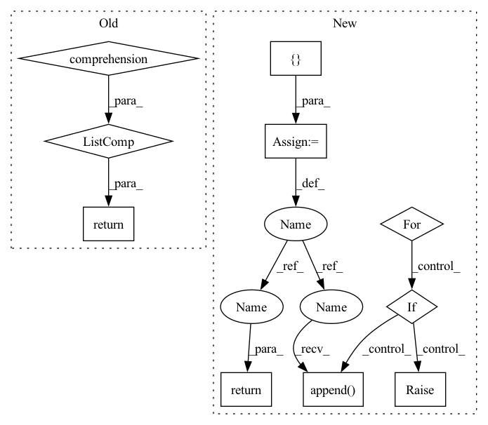

Pattern ID :40011
Before Change
self.checks = checks
def run(self, model=None, train_data=None, validation_data=None):
return [check.run(model=model, train_data=train_data, validation_data=validation_data)
for check in self.checks]
def run_and_decide(self, model=None, train_data=None, validation_data=None):
return [check.run_and_decide(model=model, train_data=train_data, validation_data=validation_data)
for check in self.checks]After Change
if check_datasets_policy not in ["both", "train", "validation"]:
raise ValueError("check_datasets_policy must be one of ["both", "train", "validation"]")
results = []
for check in self.checks:
if isinstance(check, TrainValidationBaseCheck):
results.append(check.run(train_dataset=train_dataset, validation_dataset=validation_dataset,
model=model))
elif results.append( check.run(dataset=train_dataset, compared_dataset=validation_dataset, model=model))
elif isinstance(check, SingleDatasetBaseCheck):
if check_datasets_policy in ["both", "train"]:
results.append(check.run(dataset=train_dataset))
if check_datasets_policy in ["both", "validation"]:
results.append(check.run(dataset=validation_dataset))
elif isinstance(check, ModelOnlyBaseCheck):
results.append(check.run(model=model))
else:
raise TypeError(f"Expected check of type SingleDatasetBaseCheck, CompareDatasetsBaseCheck, "
f"TrainValidationBaseCheck or ModelOnlyBaseCheck. Got {check.__class__.__name__} "
f"instead")
return results
def decide(self, model=None, train_dataset=None, validation_dataset=None, check_datasets_policy: str = "validation"
) -> List[CheckResult]:
//TODO: CompleteIn pattern: SUPERPATTERN
Frequency: 3
Non-data size: 10
Instances Fragment ID: 113799656
Project Name: deepchecks/deepchecks
Commit Name: 6b0e1c9fd14b9ca30acd20ce7bcd6460d225af5c
Time: 2021-10-11
Author: nir@deepchecks.com
File Name: mlchecks/base/suite.py
M Class Name: CheckSuite
N Class Name: CheckSuite
M Method Name: run(5)
N Method Name: run(4)
M Parent Class:
N Parent Class:
M File Name: mlchecks/base/suite.py
N File Name: mlchecks/base/suite.py
M Start Line: 18
M End Line: 19
N Start Line: 18
N End Line: 57
Before Change
raise ValueError(f"Provided file {in_loc} is not a Parquet file.")
return [in_path]
if in_path.is_dir():
return [f for f in in_path.glob("**/*") if f.suffix == ".parquet"]
return []
def _set_span_labels(self, spans):
for span in spans:After Change
in_locs = in_loc
// TODO: refactor to make all_paths a Set[Path]
all_paths = []
for path in in_locs:
path = as_path(path)
if not path.exists():
raise ValueError(f"Location {path} is not an existing file or directory.")
if path.is_file():
if path.suffix != ".parquet":
raise ValueError(f"Provided file {path} is not a Parquet file.")
all_paths.append( path)
if path.is_dir():
all_paths.extend(path.glob("**/*.parquet"))
return all_paths
def _set_span_labels(self, spans):
for span in spans: Fragment ID: 113799657
Project Name: astrazeneca/kazu
Commit Name: bd18b5976cc0f7c8d1f169cc278a34a417aac7cd
Time: 2022-11-30
Author: elliot.ford@astrazeneca.com
File Name: kazu/modelling/ontology_matching/ontology_matcher.py
M Class Name: OntologyMatcher
N Class Name: OntologyMatcher
M Method Name: _define_paths(2)
N Method Name: _define_paths(2)
M Parent Class:
N Parent Class:
M File Name: kazu/modelling/ontology_matching/ontology_matcher.py
N File Name: kazu/modelling/ontology_matching/ontology_matcher.py
M Start Line: 287
M End Line: 296
N Start Line: 282
N End Line: 299
Before Change
self.checks = checks
def run(self, model=None, train_data=None, validation_data=None):
return [check.run(model=model, train_data=train_data, validation_data=validation_data)
for check in self.checks]
def run_and_decide(self, model=None, train_data=None, validation_data=None):
return [check.run_and_decide(model=model, train_data=train_data, validation_data=validation_data)
for check in self.checks]After Change
if check_datasets_policy not in ["both", "train", "validation"]:
raise ValueError("check_datasets_policy must be one of ["both", "train", "validation"]")
results = []
for check in self.checks:
if isinstance(check, TrainValidationBaseCheck):
results.append( check.run(train_dataset=train_dataset, validation_dataset=validation_dataset,
model=model))
elif isinstance(check, CompareDatasetsBaseCheck):
results.append(check.run(dataset=train_dataset, compared_dataset=validation_dataset, model=model))
elif isinstance(check, SingleDatasetBaseCheck):
if check_datasets_policy in ["both", "train"]:
results.append(check.run(dataset=train_dataset))
if check_datasets_policy in ["both", "validation"]:
results.append(check.run(dataset=validation_dataset))
elif isinstance(check, ModelOnlyBaseCheck):
results.append(check.run(model=model))
else:
raise TypeError(f"Expected check of type SingleDatasetBaseCheck, CompareDatasetsBaseCheck, "
f"TrainValidationBaseCheck or ModelOnlyBaseCheck. Got {check.__class__.__name__} "
f"instead")
return results
def decide(self, model=None, train_dataset=None, validation_dataset=None, check_datasets_policy: str = "validation"
) -> List[CheckResult]: Fragment ID: 113799658
Project Name: deepchecks/deepchecks
Commit Name: 6b0e1c9fd14b9ca30acd20ce7bcd6460d225af5c
Time: 2021-10-11
Author: nir@deepchecks.com
File Name: mlchecks/base/suite.py
M Class Name: CheckSuite
N Class Name: CheckSuite
M Method Name: run(5)
N Method Name: run(4)
M Parent Class:
N Parent Class:
M File Name: mlchecks/base/suite.py
N File Name: mlchecks/base/suite.py
M Start Line: 18
M End Line: 19
N Start Line: 18
N End Line: 57
Before Change
:return: A list of floating point numbers, with one entry per entry in the the training or validation results.
full_metric_name = (TRAIN_PREFIX if is_training else VALIDATION_PREFIX) + metric_type
return [self.results[epoch][full_metric_name] for epoch in self.epochs]
def get_train_metric(self, metric_type: str) -> List[float]:
Gets a scalar metric from the list of training results. This returnsAfter Change
:return: A list of floating point numbers, with one entry per entry in the the training or validation results.
full_metric_name = (TRAIN_PREFIX if is_training else VALIDATION_PREFIX) + metric_type
result = []
for epoch in self.epochs:
value = self.results_per_epoch[epoch][full_metric_name]
if not isinstance(value, float):
raise ValueError(f"Expected a floating point value for metric {full_metric_name}, but got: "
f"{value}")
result.append( value)
return result
def get_train_metric(self, metric_type: str) -> List[float]:
Fragment ID: 113799662
Project Name: microsoft/innereye-deeplearning
Commit Name: bf4cb628c65155c287959f4103ebe442b109e341
Time: 2021-11-03
Author: antonsc@microsoft.com
File Name: InnerEye/ML/lightning_loggers.py
M Class Name: StoringLogger
N Class Name: StoringLogger
M Method Name: get_metric(3)
N Method Name: get_metric(3)
M Parent Class: LightningLoggerBase
N Parent Class: LightningLoggerBase
M File Name: InnerEye/ML/lightning_loggers.py
N File Name: InnerEye/ML/lightning_loggers.py
M Start Line: 110
M End Line: 110
N Start Line: 122
N End Line: 129